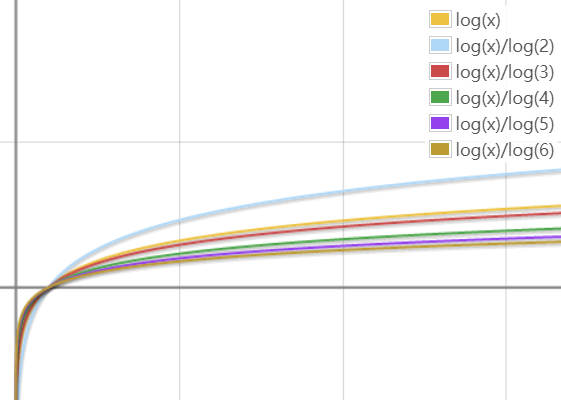
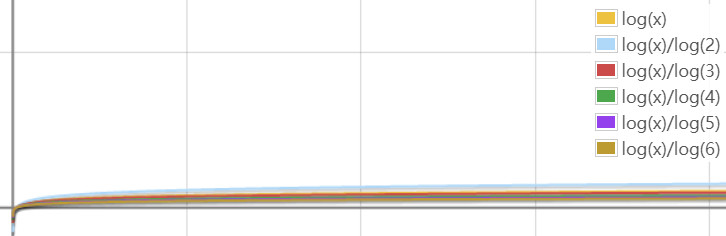

算法
算法时间复杂度定义
算法中基本操作重复执行的次数是问题规模n的某个函数，用T(n)表示，若有某个辅助函数f(n),使得当n趋近于无穷大时，T(n)/f(n)的极限值为不等于零的常数，则称f(n)是T(n)的同数量级函数。记作T(n)=O(f(n)),称O(f(n))为算法的渐进时间复杂度，简称时间复杂度。
用大写O()来体现算法时间复杂度的记法叫做大O记法。
随着模块n的增大，算法执行的时间的增长率和f(n)的增长率成正比，所以f(n)越小，算法的时间复杂度越低，算法的效率越高。
推导大O阶:
- 用常数1取代运行时间中的所有加法常数；
- 在修改后的运行次数函数中，只保留最高阶项；
- 如果最高阶项存在且不是1，则去除与这个项相乘的常数。
得到的结果就是大O阶。
对数（log底数真数）
23 = 8; log28 = 3; 2log28 = 8
负数与零无对数
lgx = log10x（常用对数）; lnx = logex（自然对数）
logab * logba = 1
loga(MN) = logaM + logaN; loga(M/N) = logaM - logaN
logaMn = nlogaM; loganM = (1/n)logaM; loganbm = (m/n)logab
logab = lnb/lna


考虑O(logxn)和O(logyn)，x != y。当n趋于无穷大时logxn/logyn的极限等于lny/lnx，是一个常数，也就是说，在n趋于无穷大的时候，logxn和logyn仅相差一个常数。所以从研究算法的角度来说log的底数不重要，可以直接记为logn。
常见的时间复杂度
| 执行次数函数 | 阶 | 非正式术语 | 能承受的大致规模 | 常见算法 |
|---|---|---|---|---|
| 12 | O(1) | 常数阶 | 任意 | 直接输出结果 |
| 2n+3 | O(n) | 线性阶 | 五六百万 | 贪心算法、扫描和遍历 |
| 3n2+2n+1 | O(n2) | 平方阶 | 两千左右 | 枚举、动态规划 |
| 5log2n+20 | O(logn) | 对数阶 | 任意 | 二分查找、快速幂 |
| 2n+3nlog2n+19 | O(nlogn) | nlogn阶 | 三四十万 | 带有分治思想的算法，如二分法 |
| 6n3+2n2+3n+4 | O(n3) | 立方阶 | 两百左右 | 动态规划 |
| 2n | O(2n) | 指数阶 | 24 | 搜索 |
| n! | O(2n) | - | 10 | 产生全排列 |
| nn | O(2n) | - | 8 | 暴力破解密码 |
0(1) < O(logn) < O(n) < O(nlogn) < 0(n2) < 0(n3) < 0(2n) < O(n!) < O(nn)